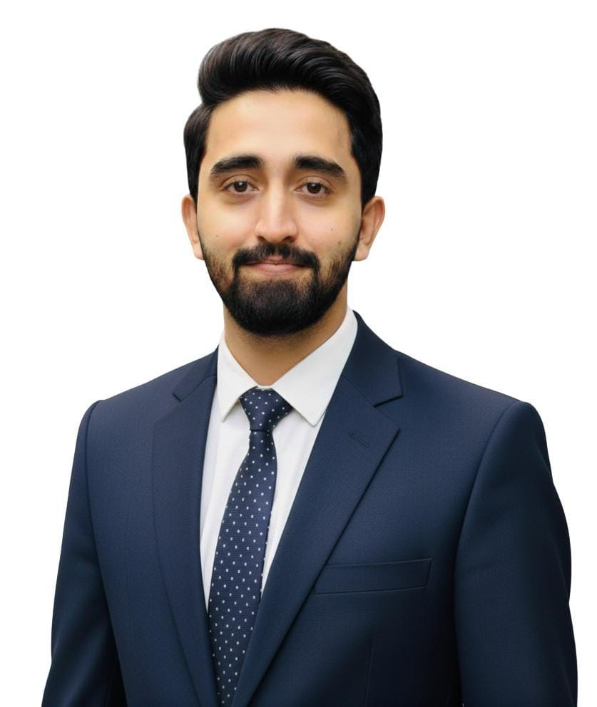

Planning & Project Controls
Baseline and update schedules, WBS development, critical path analysis, resource loading, progress measurement, dashboards, recovery schedules and EVM reporting.
RIYADH · SAUDI ARABIA · CIVIL ENGINEERING
Planning & Contracts Engineer with 5+ years across construction, utilities design, planning and contracts — currently supporting Diriyah giga-projects through FIDIC Red Book 2017 contract administration, Primavera P6 planning, EOT and delay analysis.

01 · PROFILE
Currently a Contracts Administrator with FirstFix KSA in Riyadh, supporting the Six Senses Hotel (Wadi Safar) and King Salman Knowledge District (KSKD) within Diriyah giga-projects.
Previously Planning & Contracts Engineer / Assistant Manager at Asian Consulting Engineers, managing planning and contracts for 15+ concurrent infrastructure and utilities projects, including JV projects with SaudConsult (KSA).
Earlier experience includes design, contract and planning support for a World Bank-funded water supply and sanitation programme of approximately USD 550 million.
02 · EXPERTISE
Programme control, commercial discipline and engineering context — brought together in one workflow.
Baseline and update schedules, WBS development, critical path analysis, resource loading, progress measurement, dashboards, recovery schedules and EVM reporting.
FIDIC Red Book 2017 contract administration, correspondence, notices, variations, claims and quantum reviews, EOT assessments and delay analysis.
BOQ preparation, technical specifications, conditions of contract, tender documentation, bid evaluation matrices and cost reasonableness assessments.
Water supply and sanitation systems, sewerage, OHRs, gravity and pressure systems, hydraulic design, technical reports and third-party validation.
03 · SELECTED PROJECTS
Selected assignments are based on the supplied CV and can be expanded later with project photography.
FIDIC contract administration, variations, Extension of Time support and claims-related documentation.
FIDIC Red Book 2017-based contract administration, contractual correspondence, notices, variations and compliance tracking.
Design review and construction-supervision support through a JV with SaudConsult (KSA).
Design, contract and planning support for an approximately USD 550 million programme serving 200,000+ beneficiaries.
Hydraulic design and Primavera P6 project controls support for a surface water treatment plant at BRBD Canal.
100+ validation reports across buildings, roads and utilities, covering technical verification and cost reasonableness.
04 · EXPERIENCE
Administering FIDIC Red Book 2017-based contracts across Six Senses Hotel and KSKD; preparing EOT assessments, claims and quantum submissions, maintaining contractual records and supporting fast-track project teams.
Managed planning and contracts functions for 15+ concurrent infrastructure and utilities projects, including JV projects with SaudConsult; delivered P6 schedules, delay analysis, contract administration, tender documentation and 100+ validation reports.
Supported a World Bank-funded water supply and sanitation programme of approximately USD 550 million through engineering design, feasibility studies, PC-1 proposals, cost estimates, BOQs and P6/EVM reporting.
Supervised structural and finishing works on residential and commercial sites and maintained daily reports, photo logs and as-built records.
TOOLKIT
05 · CONTACT
Available to join immediately in Riyadh. Open to Planning Engineer, Planning & Contracts Engineer, Contracts Engineer and Contracts Administrator opportunities.